In this report we model the COVID-19 epidemic in South Africa. In this paper mobility data is used to model the reproduction number of the COVID-19 epidemic over time using Bayesian hierarchical model. Results are calibrated to reported deaths only. This is achieved by adapting the work in [1] for South Africa. Similar models have been built for Brazil [2] and the United States [3].
We use data as compiled in [4]. We use mobility movement indexes by province from [5]. This report is automatically generated using R [6] and contains data available on 29 May 2020.
Key features of the approach employed are:
See a more detailed description of the methodology and assumptions below.
Below we show the mobility data from [5]. We use the indexes at a provincial level but here we plot the national indexes.
Below we plot the mobility data from [5] for South Africa as a whole. Clear trends are observable over:
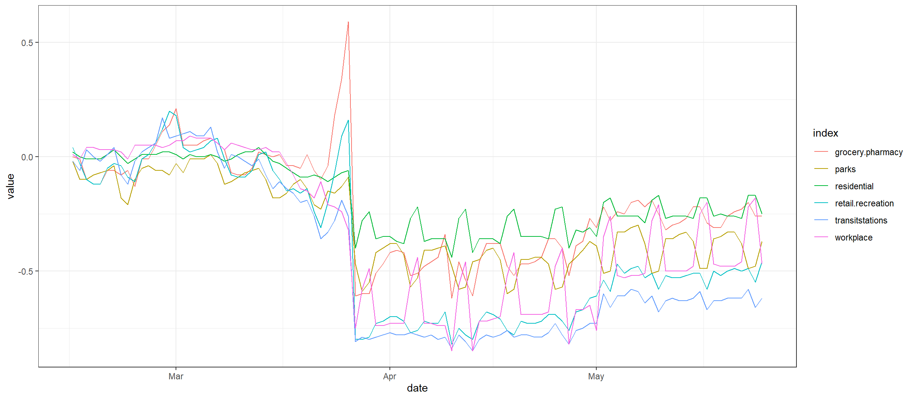
Below we summarise this chart into the 3 indicators used in the model:
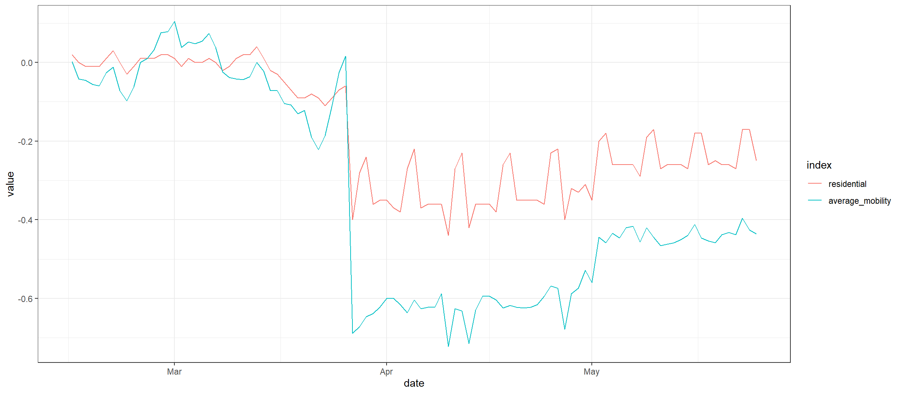
We do not show them separately, but, in the model, we use the provincial versions of these indexes.
This section shows the calibration of data for various provinces. Three panels are plotted for each province:
In all the charts the darker shaded area represents a confidence interval of 50% and the lighter shaded area represents a confidence interval of 95%.
In general, it is noted:
The Western Cape has the most reported deaths of all provinces and hence the most data to calibrate. Below we plot the modelled infections. It’s clear that infections are far outpacing reported cases. Over the last 14 days it would appear that the Western Cape only tested 2.7% of all new infections.
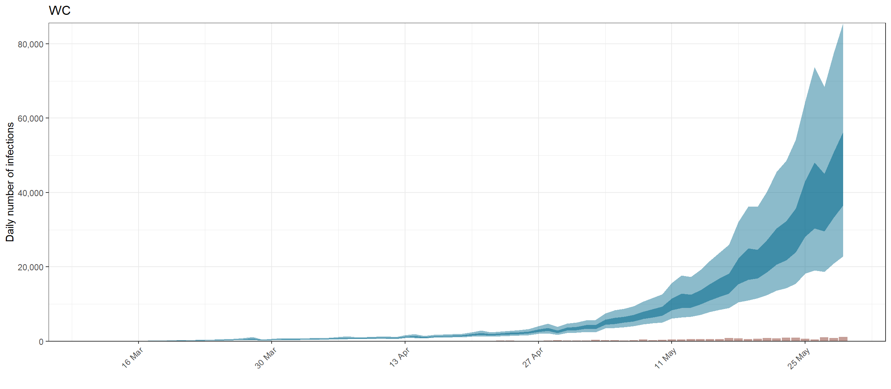
Below we plot reported deaths in brown vs. modelled deaths in blue. This province has increasing numbers of deaths. The model appears to have a reasonable fit. The data does seem quite variable from day to day which may be perhaps data processing delays causing clumping of reported deaths.
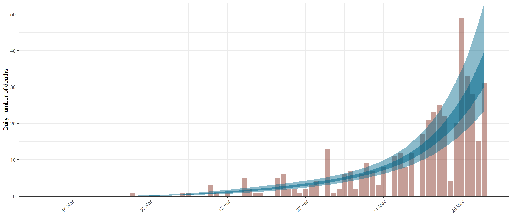
Western Cape \(R_{t,m}\) is currently in a band between 1.5 and 2.0 after never truly moving much below 1.5. Thus, we are probably dealing with an already rapidly spreading epidemic.
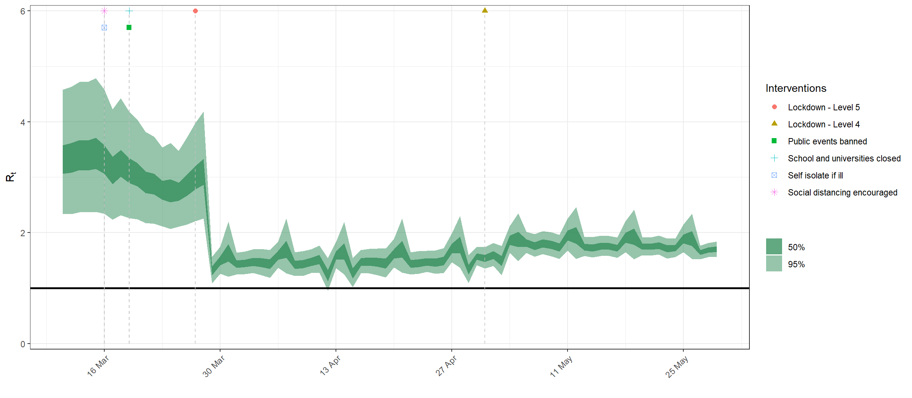
Eastern Cape also has a recently had an increase in deaths. Data is still relatively sparse, but the model is clearly trending upwards to accommodate more frequent reporting of deaths. \(R_{t,m}\) for Eastern Cape appears to be slightly higher than Western Cape. A concerning trend. Over the last 14 days it would appear that 2.7% of all new infections were tested.
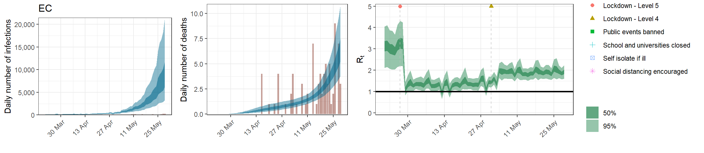
Gauteng has limited reported deaths. The long period of relatively low deaths is pulling the values of \(R_{t,m}\) during level 4 lockdown to be around 1. It is encouraging to see a slower epidemic in Gauteng. Over the last 14 days it would appear that 17.3% of all new infections were tested.
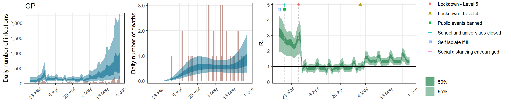
KwaZulu-Natal also has limited reported deaths. The long period of relatively low deaths is pulling the values of \(R_{t,m}\) during level 4 lockdown below 1. Over the last 14 days it would appear that 53.7% of all new infections were tested.
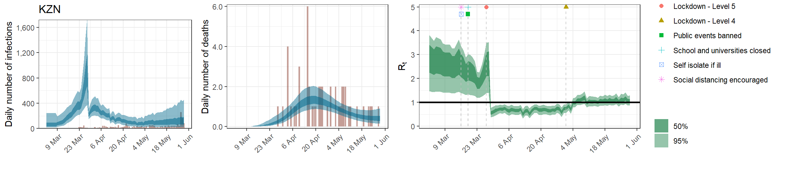
The other provinces have extremely limited data. We should await more deaths to form a conclusive opinion on these provinces. Over the last 14 days it would appear that 12.3% of all new infections were tested.
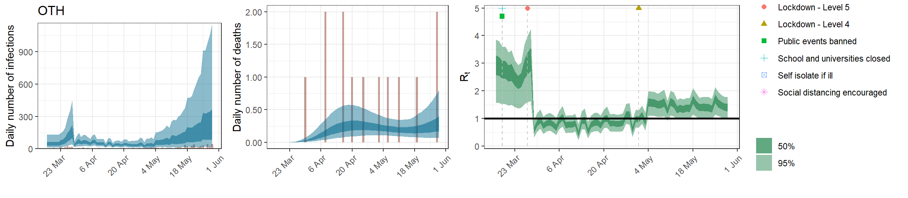
Below we plot estimates for \(R_{0,m}\) for each province. It is clear that the posterior estimates for \(R_{0,m}\) is not heavily influenced by the data. This is probably due to the relatively early lockdown implemented in South Africa. There was not deaths that resulted from infection prior to lockdown to develop an independent estimate for each province of \(R_{0,m}\).
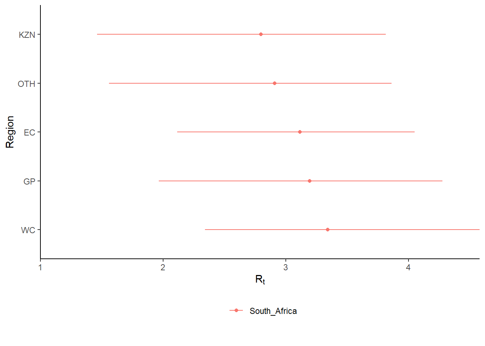
Below we plot current estimates and 95% confidence intervals for \(R_{t,m}\) (current reproduction number) for each province. It’s clear that currently the values of \(R_{t,m}\) are not below 1 (which would indicate an epidemic that is slowing). Only KwaZulu-Natal and Other provinces confidence intervals include 1. It is however clear that the spread of the epidemic is somewhat slowed compared to the initial \(R_{0,m}\).
The wide confidence intervals would indicate that we need to wait for the epidemic to further develop to include more data in our models. The confidence intervals for Western Cape is narrowing already.
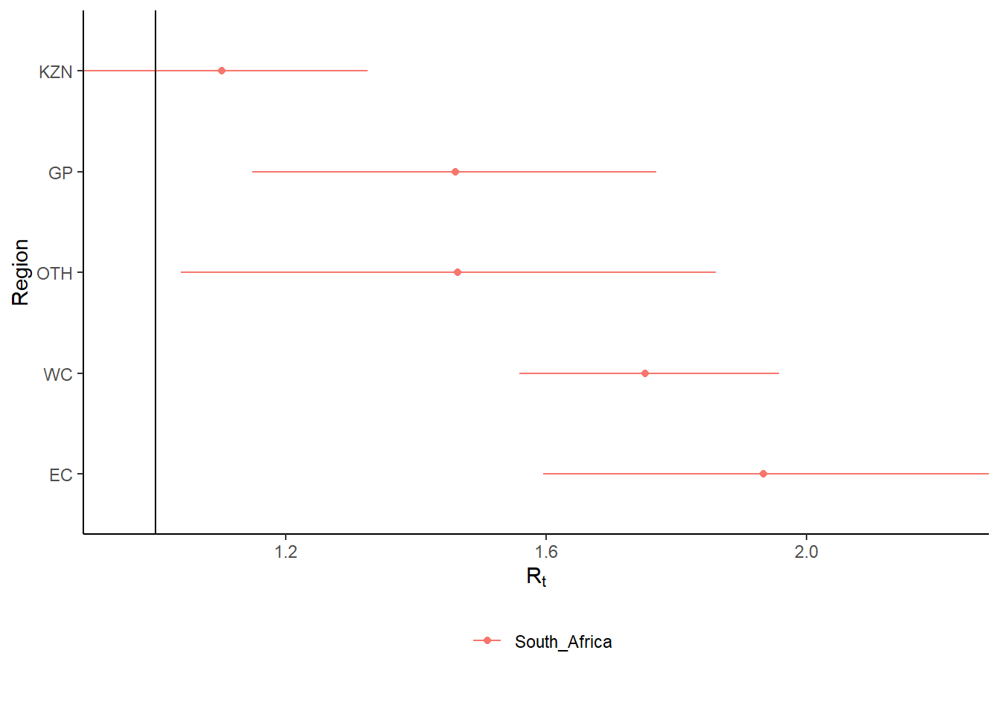
With this epidemic it’s difficult to know how many people has been infected to date. This is known as the attack ratio. Because a number of people experience no or mild symptoms, they may not seek medical advice and not be tested. Therefore, below we plot estimates of the attack ratio of the disease to date. That is the proportion of the population of each province that have been infected. Western Cape has the highest estimated prevalence to date, but with fairly wide confidence intervals. Eastern Cape currently has the second highest prevalence.
| Province | Attack Ratio |
|---|---|
| EC | 1.44% [0.68%-2.79%] |
| GP | 0.12% [0.06%-0.24%] |
| KZN | 0.14% [0.09%-0.21%] |
| WC | 8.33% [4.70%-13.80%] |
| OTH | 0.03% [0.01%-0.08%] |
| South Africa | 1.20% [0.77%-1.85%] |
One of the reasons we build models is so that we can make sense of the future or indeed the past. We can project forward models and assess the impact of varying assumptions on future outcomes to get a sense of how changes in actions may impact the future. I.e. it allows us to answer “what if” questions.
Note however that in projecting the future (or indeed alternate pasts) we are extrapolating, and due care needs to be taken.
TO DO
Below we consider future scenarios on mobility. Given that we are generally seeing a relaxation of lockdown we a may well see increased mobility in the future. So, we will consider a scenario of mobility increasing from current 50% to normal. I.e. halfway between what we have now and what we would have under normal circumstances as implied by [5].
TO DO
TO DO
TO DO
Here the intention is to test the model on data up to say x-days ago and test the x-day projection accuracy. This period can be extended over time.
TO DO
TO DO
This analysis has some limitations:
From the results it’s clear that \(R_{t,m}\) in all provinces has likely been reduced from \(R_{0,m}\) and this has slowed the spread of the epidemic in South Africa saving lives. However, in Europe the lockdowns have been able to reduce \(R_{t}\) for various countries below 1 [8]. South Africa’s lockdowns and other interventions have not been as successful as in most European countries.
It’s clear that mobility has increase somewhat following the commencement of level 4 lockdowns. This results in an increasing the \(R_{t,m}\) in various provinces since the start of May. The death data corresponding to this increased \(R_{t,m}\) is unlikely to be significant as yet and we will soon see whether this model is handling this accurately, or if potentially through other interventions the Level 4 is not increasing \(R_{t,m}\).
It’s clear that projections on current mobility levels would already result in significant peaks in deaths in July and August.
Further to that an increase from current mobility 50% back to normal mobility would significantly worsen these peaks.
The IFR is not treated as a parameter but as a constant with random noise. Changes to the IFR will change the modelled infections that correlate with the observed deaths. Sensitivity to the IFR could be modelled.
Using mobility data is useful to not only measure the impact of government interventions but also include the societal response to those interventions (as they affect mobility). This means that changes in the reaction to new regulations can be modelled. It may also be useful going forward as many new regulations are introduced possibly at a provincial level to summarise the impact of interventions numerically.
The author intends to:
The model assumes that current reproduction number, \(R_{t,m}\), is a function of the initial reproduction number, \(R_{0,m}\), and mobility changes over time. It then calculates infections as a function of \(R_{t,m}\) over time, and then, using these infections calculates deaths from the infections based on a distribution of time to death. Various prior distributions are assumed. The model structure is identical to that in [1] but is briefly documented below. The parameters are estimated jointly using a single hierarchical model covering all provinces. This means that data in different provinces are combined to inform all parameters in the model. As per [1], fitting was done in R using Stan with an adaptive Hamiltonian Monte Carlo sampler.
The model assumes a base reproduction number (\(R_{0,m}\)) for each province (\(m\)) and models future values of the reproduction number using mobility indexes as follows:
\(R_{t,m}=R_{0,m}(\phi^{-1}(-\sum_{k=1}^{3}(\alpha_{k}+\beta_{k,m})I_{k,t,m}))\)
Here:
Infections are modelled as:
\(c_{t,m}=S_{t,m}R_{t,m}\sum_{\tau=0}^{t-1}c_{\tau,m}g_{t-\tau}\) where \(S_{t,m}=1 - \frac{\sum_{i=0}^{t-1}c_{i,m}}{N_{m}}\).
Infections, \(c_{t,m}\) at time \(t\) are a function of proportion of population not yet infected (\(S_{t,m}\)), the reproduction number (\(R_{t,m}\)) and infections prior to that \(c_{\tau,m}\) as well as an infectiousness curve \(g_{t-\tau}\). \(N_m\) is the population in province \(m\).
Deaths, \(d_{t,m}\) are modelled as:
\(d_{t,m}=ifr_{m}^*\sum_{\tau=0}^{t-1}c_{\tau,m}\pi_{t-\tau}\)
Here:
The following assumptions are taken as is from [1].
We add random noise to the IFR as follows:
\(ifr_{m}^*=ifr_{m}\cdot N(1,0.1)\)
\(\alpha_{k}\) is normally distributed with a 0 mean:
\(\alpha_{k} \sim N(0,0.5)\)
If \(Y \sim N(\mu,\sigma)\) then we define \(N^{+}\) to mean the distribution of \(|Y| \sim N^{+}(0,0.5)\).
Then for the provincial specific index effects we use:
\(\beta_{k,m} \sim N(0,\gamma)\) with \(\gamma \sim N^{+}(0,0.5)\)
The \(R_{0,m}\) are defined to be distributed normally as follows:
\(R_{0,m} \sim N(3.28,\kappa)\) with \(\kappa \sim N^{+}(0,0.5)\)
Infectiousness follows this distribution:
\(g \sim Gamma(6.5,0.62)\)
Time to death follows this distribution:
\(\pi \sim Gamma(5.1,0.86)+Gamma(17.8,0.45)\)
Death and case data were used from [4]. This data set contains, amongst other, provincial case and deaths data digitised mainly from daily tweets by National Institute of Communicable Diseases (NICD).
We note again that the model calibrates to only the deaths. The reason for not calibrating to confirmed cases is that the bias in the testing is unknown. The degree to which testing has focussed on symptomatic and people seeking medical treatment or hospital treatment is unknown and could have changed over time. This would present a biased estimate and would require adjustment in this model.
Based on limited death data, provinces were aggregated as follows:
The IFR (\(ifr_{m}\)) for each province was calculated using the output of the squire R package [9]. It produces an age-specific infection attack ratios (IAR), infections and deaths. The per age band IFR were used together with the per age band IAR and these were applied to provincial populations [10]. The IFRs from squire package are based on [11], [12] and [9].
The projection was done doing the default parameters for South Africa and the resultant attack ratio (\(a_{x}\)) and IFR (\(ifr_{x}\)) for each 5-year age band was obtained (\(x\)).
These \(a_{x}\) and \(ifr_{x}\) were then applied to the South African population per province and age band as per [10] and weighted IFRs calculated as follows.
\(ifr_{m}=\frac{\sum_{x}N_{x,m} \cdot a_{x} \cdot ifr_{x}}{\sum_{x}N_{x,m}}\)
Here \(N_{x,m}\) is the population in a particular province (\(m\)) and age band (\(x\)).
Below we tabulate the resultant \(ifr_{m}\):
| Province | IFR |
|---|---|
| EC | 0.59% |
| GP | 0.39% |
| KZN | 0.4% |
| WC | 0.48% |
| OTH | 0.44% |
| South Africa | 0.44% |
The differences between provinces reflect the different age profiles in those provinces as per [10]. This seems low compared to the IFRs in [7], but may be reasonable given the younger profile of the South African population.
These data contain the mobility indexes for each province. These are described in [5] as follows:
These measure relative changes in mobility in above dimensions relative to a baseline established before the epidemic. For example, -30% implies a 30% reduction in mobility from pre-COVID-19 mobility.
As per [1] these data were combined into 2 indexes for each province as follows:
In [1] three indexes were used (Residential, Transit and the rest). This was reduced for this paper due to limited data.
We calculated indexes for OTH by weighting the individual provinces by population.
[1] Volmer et al., “Report 20 - using mobility to estimate the transmission intensity of COVID-19 in Italy: A subnational analysis with future scenarios,” Imperial College, London, 2020 [Online]. Available: https://www.imperial.ac.uk/mrc-global-infectious-disease-analysis/covid-19/report-20-italy/
[2] Mellan et al., “Report 21: Estimating COVID-19 cases and reproduction number in brazil,” Imperial College, London, 2020 [Online]. Available: https://www.imperial.ac.uk/mrc-global-infectious-disease-analysis/covid-19/report-21-brazil/
[3] Unwin et al., “Report 23 - state-level tracking of COVID-19 in the united states,” Imperial College, London, 2020 [Online]. Available: https://www.imperial.ac.uk/mrc-global-infectious-disease-analysis/covid-19/report-23-united-states/
[4] Marivate et al., “Coronavirus disease (COVID-19) case data - South Africa.” [Online]. Available: https://github.com/dsfsi/covid19za
[5] Google LLC, “Google covid-19 community mobility reports.” [Online]. Available: https://www.google.com/covid19/mobility/
[6] R Core Team, R: A language and environment for statistical computing. Vienna, Austria: R Foundation for Statistical Computing, 2019 [Online]. Available: https://www.R-project.org/
[7] G. Meyerowitz-Katz and L. Merone, “A systematic review and meta-analysis of published research data on COVID-19 infection-fatality rates,” Cold Spring Harbor Laboratory Press, 2020 [Online]. Available: https://www.medrxiv.org/content/early/2020/05/27/2020.05.03.20089854
[8] Flaxman et al., “Report 13 - estimating the number of infections and the impact of non-pharmaceutical interventions on COVID-19 in 11 European countries,” Imperial College, London, 2020 [Online]. Available: https://www.imperial.ac.uk/mrc-global-infectious-disease-analysis/covid-19/report-13-europe-npi-impact/
[9] Walker et al., “Report 12 - the global impact of COVID-19 and strategies for mitigation and suppression,” Imperial College, London, 2020 [Online]. Available: https://www.imperial.ac.uk/mrc-global-infectious-disease-analysis/covid-19/report-12-global-impact-covid-19/
[10] Statistics South Africa, “Mid-year population estimates 2019,” Republic of South Africa, London, 2019.
[11] Verity et al., “Estimates of the severity of coronavirus disease 2019: A model-based analysis,” The Lancet Infectious Diseases, 2020 [Online]. Available: https://www.thelancet.com/journals/laninf/article/PIIS1473-3099(20)30243-7/fulltext
[12] Ferguson et al., “Report 9 - impact of non-pharmaceutical interventions (NPIs) to reduce COVID-19 mortality and healthcare demand,” Imperial College, London, 2020 [Online]. Available: https://www.imperial.ac.uk/mrc-global-infectious-disease-analysis/covid-19/report-9-impact-of-npis-on-covid-19/